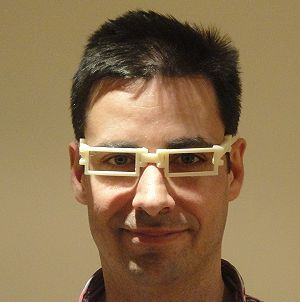
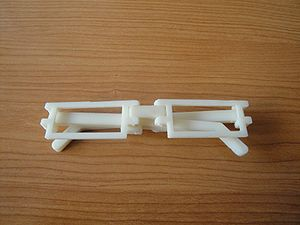
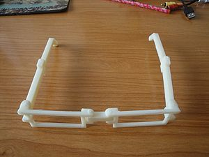
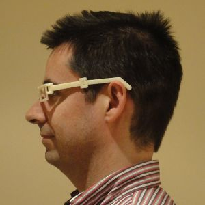
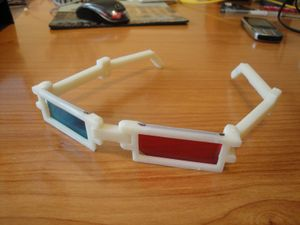
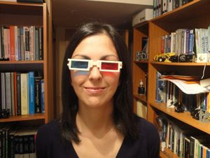
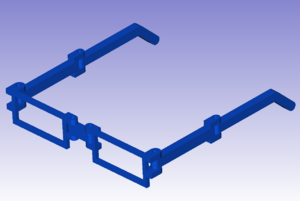
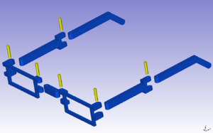

Gafas imprimibles (click para ampliar)
Contenido
[ocultar]Introducción
Montura de gafas parametrizable y plegable. Tiene 5 grados de libertad por lo que se adapta fácilmente a cualquier persona.
Descarga
Versión 1.0
| glasses-stl.zip | Piezas en STL para imprimir |
| glasses-openscad.zip | Fuentes en OpenScad |
| glasses-parts.fcstd | Despiece en Freecad |
| glasses.fcstd | Diseño en Freecad |
- Diseñada con OpenScad
- Gcode generado con: Replicatorg 0023 (Skeinforge 35)
Fotos
| Álbum de fotos completo |
|---|
|  (click para ampliar) |
 (click para ampliar) |
 (click para ampliar) |


|  (click para ampliar) |
 (click para ampliar) |


Montaje
Las gafas constan de 7 partes unidames mediante 5 ejes de 3mm. Se han diseñado para utilizar directamente ejes de plástico ABS (el mismo que alimenta la impresora)
|  Las gafas montadas (click para ampliar) |
 Las 7 piezas y los 5 ejes que componen las gafas (click para ampliar) |


Repositorio
- Repositorio SVN: http://svn.iearobotics.com/3D_objects/glasses/
Para obtener la última versión teclear:
svn co http://svn.iearobotics.com/3D_objects/glasses/
Enlaces
Autores
- Juan González: Tuercas empotradas y refactorización del código
Licencia
| |
Noticias
- 19/Abril/2011: Comenzada esta página